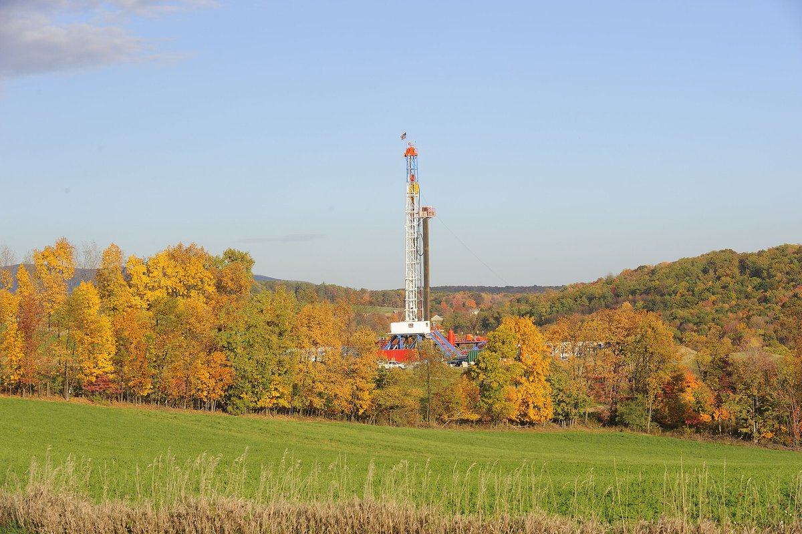
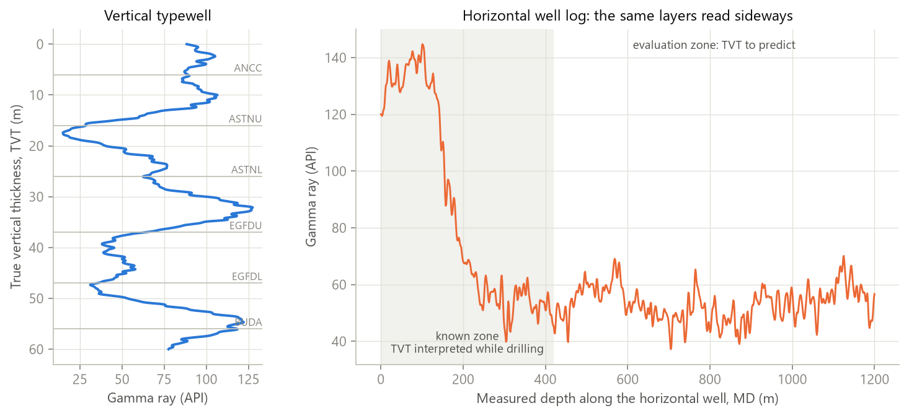
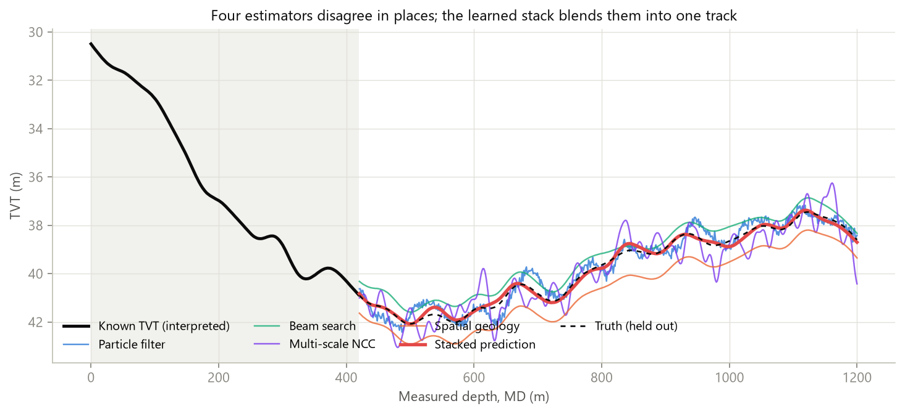

Wellbore Geology Prediction - Where a Horizontal Well Sits in the Rock
A geosteering model that places a horizontal well inside the subsurface. It reads the gamma-ray log along the drilled path, matches it against a vertical reference well, and predicts the true vertical thickness (TVT) at every point, so the position of the bit in the rock layers is known where it was never measured.
Keywords

1. Introduction
Geosteering is keeping a drill bit inside a thin target layer while drilling sideways through it. The driller cannot see the rock; what they have is a gamma-ray curve, which rises and falls with the clay content, and a nearby vertical well, the typewell, where the same layers were logged top to bottom. Reading the two together tells you how far above or below a reference layer the bit sits. Part of each path is interpreted while drilling and carries a known TVT; the model predicts the rest.

| File | Contents |
|---|---|
<well>__horizontal_well.csv | The drilled path: measured depth MD, position X Y Z, gamma ray GR, a partly-known TVT_input, and the formation tops at each point |
<well>__typewell.csv | The vertical reference log for that well: TVT against GR, top to bottom |
2. Goal
Goal
- Predict the true vertical thickness at every point of a horizontal well from its gamma-ray log and a reference typewell.
- Combine physics-style estimators with a learned stack so the result is both explainable and accurate.
- Validate by well, never by row, so the reported error is what a new well would see.
3. Approach
What made it hard
- The reference log is vertical and the drilled path is nearly horizontal, so the two are never sampled the same way and have to be aligned by shape, not by depth.
- Gamma-ray values drift and scale differently between a well and its typewell, so a raw comparison misleads until it is calibrated.
- The known part of a path can be short and the part to predict long, so the estimate has to extrapolate without a hard anchor.
- The rock dips and its layers thicken and thin across the field, so geometry from one well only partly transfers to the next.
No single estimator is reliable on its own: each is strong on some wells and weak on others. Four independent families each answer the same question a different way, and a model learns how to combine them per well.
flowchart LR
H[Horizontal well log
MD · XYZ · GR · formations]:::input --> PF[Particle filter
GR vs typewell]:::process
T[Vertical typewell
TVT vs GR]:::input --> PF
H --> BS[Beam search]:::process
T --> BS
H --> NC[Multi-scale NCC]:::process
T --> NC
H --> SP[Spatial geology
formation planes · dense ANCC]:::process
PF --> F[(Feature stack
tracks · deltas · GR stats · slopes)]:::store
BS --> F
NC --> F
SP --> F
F --> G[LightGBM + CatBoost
GroupKFold by well]:::agent
G --> R[Ridge blend
+ per-well selector]:::agent
R --> O[Predicted TVT
along the whole path]:::output
3.1 A particle filter along the gamma-ray log
The core estimator carries a cloud of hypotheses about the bit's vertical position, moves them forward with the well, and reweights them by how well the gamma-ray reading they imply matches the typewell at that depth. Hypotheses that keep matching survive; the rest are resampled away. The filter is run from many seeds and the runs are blended by their own likelihood, so a seed that tracked the log well counts for more than one that lost it. The inner loop is compiled with Numba.
for i in range(len(ev)):
# 1. move every particle forward along measured depth
rate = MOM * rate + VN * rng.standard_normal(N)
pos = pos + rate * dm_step + PN * rng.standard_normal(N)
# 2. weight by agreement between the observed GR and the typewell
eg = np.interp(pos - z_v[i], tw_tvt, tw_gr)
d = (gr_v[i] - eg) / gs
w = w * np.maximum(np.exp(-0.5 * np.minimum(d**2, 600.)), 1e-300)
w /= w.sum()
# 3. resample when the cloud collapses onto too few particles
if 1.0 / (w**2).sum() < 0.5 * N:
pos, rate = systematic_resample(pos, rate, w)
w = np.ones(N) / N
res[i] = float(np.dot(w, pos - z_v[i])) # weighted TVT estimate
3.2 A beam search through the reference log
The second estimator treats alignment as a shortest-path problem: each step of the drilled path may move up or down a small amount through the typewell, paying a cost for disagreeing with the gamma-ray reading and a cost for moving. A stiff, high-move-cost search holds a steady line through noise; a loose one follows every wiggle. A spread of configurations is run and each is handed to the model separately, so it can prefer the right stiffness per well.
# A spread of beam configs, from conservative to loose: (beam width, move cost, GR scale, smoothing).
BEAMS = [(10, 20.0, 144.0, 2, "cons"), (10, 8.0, 64.0, 2, "loose"), (8, 35.0, 220.0, 1, "vcons"),
(10, 14.0, 90.0, 5, "sm5"), (20, 4.0, 36.0, 3, "vloose"), (12, 12.0, 100.0, 3, "mid"), (15, 25.0, 180.0, 2, "stiff")]
3.3 Multi-scale template matching
The third estimator slides the known gamma-ray pattern over the drilled log at three window sizes and scores the overlap with normalised cross-correlation. Short windows catch sharp local features; long windows lock onto the broad shape. The scales are merged with a softmax over their match scores.
# Normalised cross-correlation at window radii 8, 15, 25; softmax-weighted.
ncc = Hn @ Cn.T / win # match every path window against every known window
best = ncc.argmax(1) # best-matching known position
score = ncc.max(1) # how confident that match is
sw = np.exp(3. * scores); sw /= sw.sum(1, keepdims=True)
ensemble = (tvts * sw).sum(1) # confidence-weighted blend across scales
3.4 Spatial geology
The last family ignores the gamma-ray log and uses geometry. Because the field is logged at many wells, the depth of each formation at a new location can be predicted from its neighbours: a small weighted plane is fitted through the nearest wells by map position, for all six formations at once, and read at the query point. A well never uses itself. Its disagreement with the log-based estimators is itself a useful feature.
FORMATION_COLS = ['ANCC', 'ASTNU', 'ASTNL', 'EGFDU', 'EGFDL', 'BUDA']
class FormationPlaneKNN:
def impute(self, xy_q, self_wid=None, k=10):
dist, idx = self.tree.query(xy_q / self.scale, k=k + 5, workers=-1)
if self_wid in self.wmap:
dist = np.where(idx == self.wmap[self_wid], np.inf, dist) # never the well itself
coef = np.linalg.solve(A, rhs) # plane a·x + b·y + c per query
return Xq[:, None] * coef[:, 0, :] + Yq[:, None] * coef[:, 1, :] + coef[:, 2, :], nearest_distance
3.5 Feature stack and model
Every estimator produces a TVT track. All of them, and the differences between them, become features for LightGBM and CatBoost regressors with a Ridge meta-blend: the tracks, the template scores, the spatial estimates, gamma-ray rolling statistics, lags and derivatives, path slopes, the affine calibration between log and typewell, and the per-formation fit error in the known zone. When the independent estimators agree the answer is trusted; when they split, the model learns which to believe from the well's own shape. A selector also picks a per-well blend of the raw estimators, keyed on how much of the path is unknown and how much vertical range it covers.
class CFG:
seed = 42
n_splits = 5
cv = GroupKFold(n_splits=n_splits) # never split one well across folds
metric = root_mean_squared_error # RMSE on TVT
4. Results

How it is measured
- Metric: root-mean-square error of predicted TVT against the interpreted truth over the evaluation zone.
- Validation: five-fold
GroupKFoldgrouped by well, so the error is measured on wells the model never saw. Rows from one well are highly correlated; splitting by row would make the score look far better than it is. - Design: four independent estimators blended by a learned model and selected per well, so a mistake by any one of them is caught by the others rather than carried into the answer.
The pipeline runs offline: the training helper and its dependencies install from pre-downloaded wheels, and the Numba kernels are warmed up on a tiny synthetic well at import so the first real well does not pay the compile cost.
5. Code and details on Kaggle
The main project and its technical details are uploaded to Kaggle, so please refer to the notebooks to understand the work in detail.
시추공 지질 예측 - 수평정이 암층 어디에 있는지
수평정을 지하 안에 놓는 지오스티어링 모델이에요. 시추 경로를 따라 감마선 로그를 읽고, 수직 기준정과 맞추고, 모든 지점에서 진수직두께(TVT)를 예측해요. 그래서 한 번도 측정하지 않은 곳에서도 비트가 암층 어디에 있는지 알 수 있어요.
키워드
1. 소개
지오스티어링은 옆으로 뚫고 가는 동안 드릴 비트를 얇은 목표 지층 안에 유지하는 일이에요. 시추하는 사람은 암석을 볼 수 없어요. 있는 건 점토 함량에 따라 오르내리는 감마선 곡선과, 같은 지층을 위에서 아래로 기록한 근처의 수직정, 즉 기준정(typewell)이에요. 둘을 같이 읽으면 비트가 기준 지층보다 얼마나 위나 아래에 있는지 알 수 있어요. 경로의 일부는 시추 중에 해석되어 TVT를 알고 있고, 모델은 나머지를 예측해요.
| 파일 | 내용 |
|---|---|
<well>__horizontal_well.csv | 시추 경로: 측정 심도 MD, 위치 X Y Z, 감마선 GR, 일부만 있는 TVT_input, 지점마다의 지층 경계 |
<well>__typewell.csv | 그 정의 수직 기준 로그: GR에 대한 TVT, 위에서 아래로 |
2. 목표
목표
- 감마선 로그와 기준 수직정으로 수평정의 모든 지점에서 진수직두께를 예측해요.
- 물리 기반 추정기와 학습된 스택을 결합해서 설명 가능하면서도 정확한 결과를 내요.
- 행이 아니라 정 단위로 검증해서, 보고하는 오차가 새 정에서 볼 오차가 되게 해요.
3. 접근
어려웠던 점
- 기준 로그는 수직이고 시추 경로는 거의 수평이라서, 둘은 같은 방식으로 샘플링되지 않아요. 깊이가 아니라 모양으로 맞춰야 해요.
- 감마선 값이 정과 기준정 사이에 다르게 드리프트하고 스케일이 달라서, 보정 전에는 그대로 비교하면 틀려요.
- 아는 구간은 짧고 예측할 구간은 길 수 있어서, 단단한 기준 없이 외삽해야 해요.
- 암석은 기울어 있고 지층은 지역에 따라 두꺼워지고 얇아져서, 한 정의 기하가 다음 정에 일부만 옮겨 가요.
추정기 하나만으로는 믿을 수 없어요. 각각 어떤 정에서는 강하고 어떤 정에서는 약해요. 독립적인 네 계열이 같은 질문에 서로 다른 방법으로 답하고, 모델이 정마다 그걸 어떻게 합칠지 배워요.
flowchart LR
H[수평정 로그
MD · XYZ · GR · 지층]:::input --> PF[Particle Filter
GR 대 기준정]:::process
T[수직 기준정
TVT 대 GR]:::input --> PF
H --> BS[Beam Search]:::process
T --> BS
H --> NC[다중 스케일 NCC]:::process
T --> NC
H --> SP[공간 지질
지층 평면 · 조밀 ANCC]:::process
PF --> F[(특징 스택
트랙 · 차이 · GR 통계 · 기울기)]:::store
BS --> F
NC --> F
SP --> F
F --> G[LightGBM + CatBoost
정 단위 GroupKFold]:::agent
G --> R[Ridge 블렌드
+ 정별 선택기]:::agent
R --> O[경로 전체의
예측 TVT]:::output
3.1 감마선 로그를 따라가는 Particle Filter
핵심 추정기는 비트의 수직 위치에 대한 가설 구름을 들고, 정을 따라 앞으로 옮기고, 각 가설이 뜻하는 감마선 값이 그 깊이의 기준정과 얼마나 맞는지로 가중치를 다시 매겨요. 계속 맞는 가설은 살아남고 나머지는 리샘플링으로 사라져요. 필터는 여러 Seed로 돌리고, 각 실행의 우도로 섞어요. 로그를 잘 따라간 Seed가 놓친 Seed보다 더 많이 반영돼요. 안쪽 루프는 Numba로 컴파일했어요.
for i in range(len(ev)):
# 1. move every particle forward along measured depth
rate = MOM * rate + VN * rng.standard_normal(N)
pos = pos + rate * dm_step + PN * rng.standard_normal(N)
# 2. weight by agreement between the observed GR and the typewell
eg = np.interp(pos - z_v[i], tw_tvt, tw_gr)
d = (gr_v[i] - eg) / gs
w = w * np.maximum(np.exp(-0.5 * np.minimum(d**2, 600.)), 1e-300)
w /= w.sum()
# 3. resample when the cloud collapses onto too few particles
if 1.0 / (w**2).sum() < 0.5 * N:
pos, rate = systematic_resample(pos, rate, w)
w = np.ones(N) / N
res[i] = float(np.dot(w, pos - z_v[i])) # weighted TVT estimate
3.2 기준 로그를 지나는 Beam Search
두 번째 추정기는 정렬을 최단 경로 문제로 봐요. 시추 경로의 각 단계는 기준정 안에서 조금 위나 아래로 움직일 수 있고, 감마선 값과 다른 만큼, 움직인 만큼 비용을 내요. 이동 비용이 큰 뻣뻣한 탐색은 노이즈 속에서 안정된 선을 유지하고, 느슨한 탐색은 작은 흔들림까지 따라가요. 여러 설정을 돌리고 각각 모델에 따로 넘겨서, 정마다 맞는 뻣뻣함을 고르게 해요.
# A spread of beam configs, from conservative to loose: (beam width, move cost, GR scale, smoothing).
BEAMS = [(10, 20.0, 144.0, 2, "cons"), (10, 8.0, 64.0, 2, "loose"), (8, 35.0, 220.0, 1, "vcons"),
(10, 14.0, 90.0, 5, "sm5"), (20, 4.0, 36.0, 3, "vloose"), (12, 12.0, 100.0, 3, "mid"), (15, 25.0, 180.0, 2, "stiff")]
3.3 다중 스케일 템플릿 매칭
세 번째 추정기는 아는 감마선 패턴을 시추 로그 위로 세 가지 윈도 크기로 밀면서 정규화 상호상관으로 겹침을 점수 매겨요. 짧은 윈도는 날카로운 국소 특징을 잡고, 긴 윈도는 넓은 모양에 고정돼요. 스케일들은 매칭 점수의 Softmax로 합쳐요.
# Normalised cross-correlation at window radii 8, 15, 25; softmax-weighted.
ncc = Hn @ Cn.T / win # match every path window against every known window
best = ncc.argmax(1) # best-matching known position
score = ncc.max(1) # how confident that match is
sw = np.exp(3. * scores); sw /= sw.sum(1, keepdims=True)
ensemble = (tvts * sw).sum(1) # confidence-weighted blend across scales
3.4 공간 지질
마지막 계열은 감마선 로그를 무시하고 기하를 써요. 이 지역은 여러 정에서 로그가 있어서, 새 위치의 지층 깊이를 이웃에서 예측할 수 있어요. 지도 위치로 가장 가까운 정들을 지나는 작은 가중 평면을 여섯 지층에 대해 한 번에 맞추고, 질문 지점에서 읽어요. 정은 절대 자기 자신을 쓰지 않아요. 로그 기반 추정기와의 불일치 자체가 유용한 특징이에요.
FORMATION_COLS = ['ANCC', 'ASTNU', 'ASTNL', 'EGFDU', 'EGFDL', 'BUDA']
class FormationPlaneKNN:
def impute(self, xy_q, self_wid=None, k=10):
dist, idx = self.tree.query(xy_q / self.scale, k=k + 5, workers=-1)
if self_wid in self.wmap:
dist = np.where(idx == self.wmap[self_wid], np.inf, dist) # never the well itself
coef = np.linalg.solve(A, rhs) # plane a·x + b·y + c per query
return Xq[:, None] * coef[:, 0, :] + Yq[:, None] * coef[:, 1, :] + coef[:, 2, :], nearest_distance
3.5 특징 스택과 모델
추정기마다 TVT 트랙을 내요. 그 전부와 그들 사이의 차이가 LightGBM과 CatBoost 회귀 모델과 Ridge 메타 블렌드의 특징이 돼요. 트랙, 템플릿 점수, 공간 추정값, 감마선 이동 통계, 지연과 미분, 경로 기울기, 로그와 기준정 사이의 Affine 보정, 아는 구간의 지층별 맞춤 오차요. 독립적인 추정기들이 일치하면 답을 믿고, 갈리면 모델이 정의 모양에서 무엇을 믿을지 배워요. 선택기는 경로의 얼마가 미지인지, 수직 범위가 얼마나 되는지를 기준으로 정마다 원시 추정기의 블렌드도 골라요.
class CFG:
seed = 42
n_splits = 5
cv = GroupKFold(n_splits=n_splits) # never split one well across folds
metric = root_mean_squared_error # RMSE on TVT
4. 결과
측정 방법
- 지표: 평가 구간에서 예측 TVT와 해석된 진실 사이의 RMSE.
- 검증: 정 단위로 묶은 5-fold
GroupKFold. 모델이 한 번도 보지 않은 정에서 오차를 재요. 한 정의 행들은 서로 강하게 상관돼 있어서, 행 단위로 나누면 점수가 실제보다 훨씬 좋아 보여요. - 설계: 독립적인 추정기 넷을 학습된 모델이 섞고 정마다 선택하니까, 하나의 실수가 답으로 넘어가지 않고 다른 것들이 잡아요.
파이프라인은 오프라인으로 돌아요. 학습 도구와 의존성은 미리 받은 wheel에서 설치하고, Numba 커널은 import 때 작은 합성 정으로 미리 데워서 첫 실제 정이 컴파일 비용을 내지 않게 해요.
5. 코드와 자세한 내용은 Kaggle에
메인 프로젝트와 기술적인 세부 내용은 Kaggle에 올려 두었어요. 작업을 자세히 이해하시려면 노트북을 참고해 주세요.